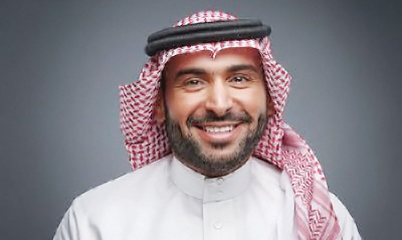
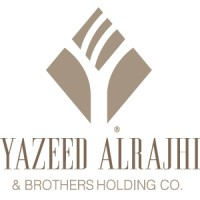
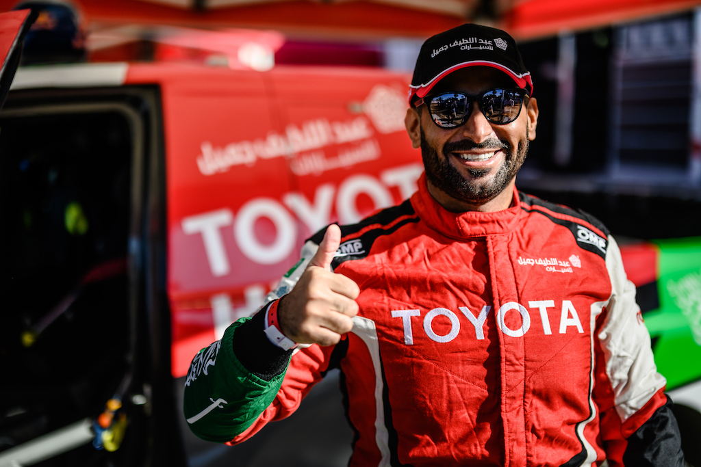
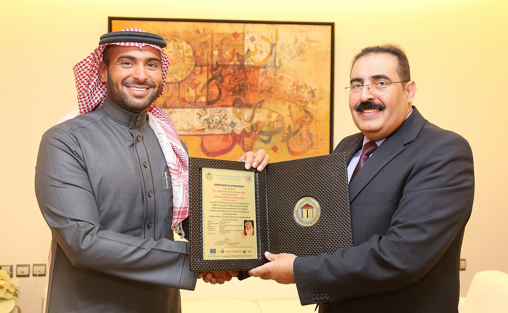

Biography
Yazeed Mohamed Al-Rajhi, born on 30 September 1981 in Riyadh, is a renowned Saudi businessman and a celebrated rally driver. He is one of the prominent sons of businessman Sheikh Muhammad bin Abdulaziz Al-Rajhi. Yazeed’s roots can be traced back to the Al-Qassim region and the Bani Zaid tribe.
Business Career
Yazeed started his business career at a young age, being appointed in 1998 as an observer of the Private Property Office by his father. He climbed the ranks to become the general manager and subsequently took over as CEO of Yazeed Al-Rajhi & Brothers Holding Company. His strategic vision has significantly influenced the expansion and success of the family business.
Rally Driving
Parallel to his business endeavors, Yazeed has been competing in rally driving since 2007. His passion for motorsport is reflected in his participation in various prestigious rallies, including the Dakar Rally and the World Rally Championship. Yazeed has achieved notable success in the sport, winning multiple championships and stages on both local and international circuits.
Philanthropy
Yazeed is also known for his philanthropic efforts, actively participating in charitable activities and initiatives across Saudi Arabia and beyond.
